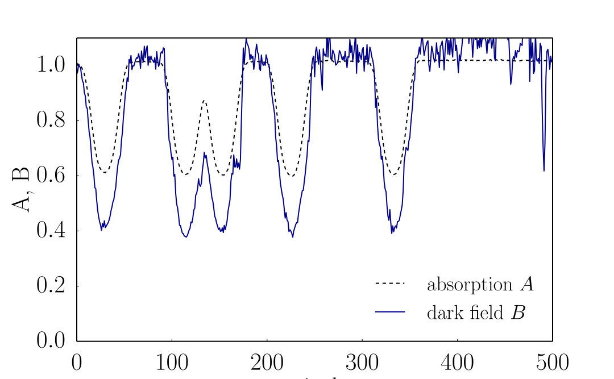
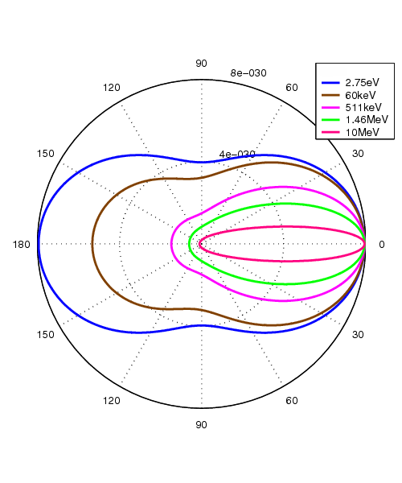
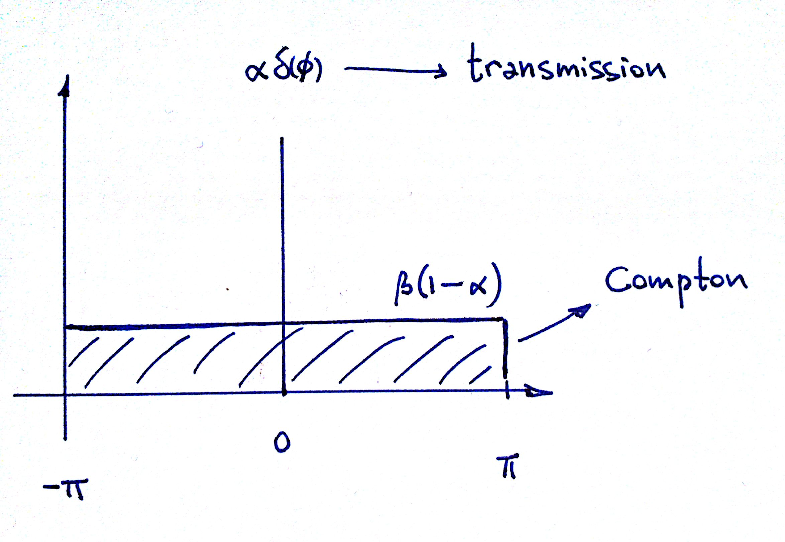

High-energy grating interferometry
The realm of Compton
On previous episodes
100 and 120 keV interferometers

paper published by Scientific Reports on 6th June
Strong dark-field from homogeneous samples
Example: profile of copper rods
Polychromatic effect or Compton scattering?
What's new today
- experimental results at 120 keV
- theoretical description
Experiment
Absorption \(A\) and dark field \(B\)
for different materials and thicknesses
Procedure
- sinogram (thickness variation)
- Fourier component analysis
-
calculate log ratio as
Log ratio vs absorption
Log ratio vs dark field
Dark field vs absorption
Theory
usaxs approach
\[ s = g \star f \]
A Compton distribution
- absorption = extinction
- uniform scattering

differential Klein-Nishina cross section

Relationship between \(A\) and \(B\)
Relationship between \(A\) and \(B\)
Results
Fit for \( \beta = 0.08593(52) \)
\(p \lt 0.001\)
Results
\( \beta = 0.07785(32) \)
no microstructures
Comments
Some loss of complementarity
Fourier analysis \( \rightarrow \) fit with only two parameters
No phase contrast for highly absorbing samples, even at high energies